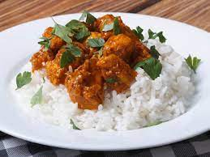

Chicken Curry

Description
The Chicken Curry is a south-asian meal from India. This easy staple chicken curry is a fantastic recipe for family dinners. It's made with just a handful of ingredients and is enriched with creamy yogurt.
Ingredients
- Rice
- Chicken
- Curry
- Heavy Cream
- Salt
- Pepper
- Cumin
Steps
- Cut Chicken in cube
- Rince rice and put it into boiling water
- Cook chicken in a pan to make it brown with some oil, add Heavy Cream and Curry
- Add Salt, Pepper and Cumin to the chicken
- Let it cook for 5 minutes at a low heating fire
- Drain the rice
- Add everything inside the pan to the rice, let it cook at low heating fire for 20 minutes while blending it every 2 minutes
- You can serve and eat